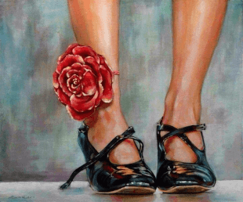
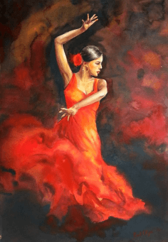
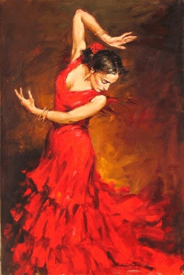
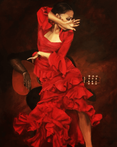

Técnicas
El baile flamenco es una expresión artística que involucra una variedad de técnicas específicas, cada una de las cuales contribuye a la riqueza y complejidad del género. Aquí se describen algunas de las técnicas clave del baile flamenco:
Zapateado

El zapateado en el flamenco es una forma de percusión creada con los pies, característica distintiva de este género musical y artístico. |
BrazosCada una de las posiciones y movimientos de los brazos son esenciales para transmitir distintas emociones, contar historias y añadir gracia a la actuación. |
GirosEn el flamenco, los giros también conocidos como vueltas son movimientos fundamentales en el baile que añaden dinamismo, gracia y expresividad a la actuación. |
PosturaLa postura en el flamenco es crucial para la expresión y la técnica del baile. La posición del cuerpo y las extremidades contribuye significativamente al baile. |